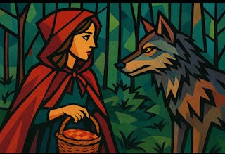

CAPERUCITA Y EL LOBO
Había una vez una niña llamada Lucía, a quien todos conocían como Caperucita Roja porque su abuela le había tejido una hermosa capa de ese color. Lucía la llevaba siempre que atravesaba el bosque para visitar a su abuela, que vivía en una cabaña al otro lado del río.
Una mañana su madre le pidio:
- -Lucía, lleva esta cesta con pan recién hecho y mermelada a tu abuela. Y recuerda: no te entretengas en el bosque.
Lucía obedeció y emprendió el camino. El bosque estaba tranquilo: los pájaros cantaban y la luz del sol se filtraba entre los árboles. Caperucita disfrutaba tanto del paisaje que no se dio cuenta de que alguien la observaba.
De entre la maleza apareció un lobo, grande y astuto.
- —Buenos días, niña —dijo con voz suave.
- —Buenos días, señor lobo —respondió Lucía, sin sospechar nada.
- —¿A dónde vas tan temprano?
- —A casa de mi abuela, al final del sendero —contestó ella.
- —Ese sendero es muy largo y aburrido —mintió—. Conozco uno más corto y bonito.
Caperucita dudó, pero el lobo hablaba tan bien que terminó creyéndole. Mientras ella seguía el camino equivocado, el lobo tomó el sendero real y llegó a la cabaña antes. La abuela, sorprendida al verlo entrar, apenas tuvo tiempo de esconderse antes de que el lobo ocupara su cama y se tapara hasta la nariz con las sábanas, esperando a la niña.
Cuando Caperucita llegó, notó que su abuela tenía una voz extraña.
- —Abuelita, qué voz tan ronca tienes…
- —Es por el resfriado, querida —respondió el lobo disfrazado.
- —Y qué ojos tan grandes…
- —Para verte mejor —dijo él.
- —Y qué dientes tan afilados…
- —¡Son para comerte mejor!
La abuela salió de su escondite, sana y salva, y abrazó a su nieta.
- —Gracias por venir, Lucía, pero recuerda: nunca escuches a los desconocidos, por muy amables que parezcan.